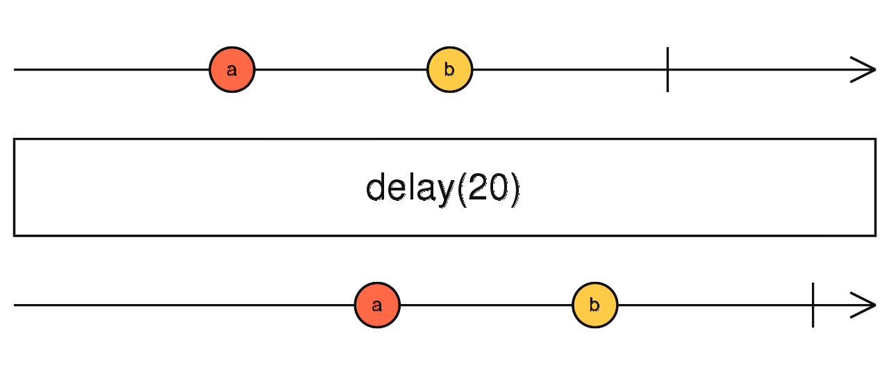

delay
参数列表：
-
delay
number | Date
如果是数字，表示延迟的毫秒数。如果是Date，则表示一直延迟到指定时间.
-
scheduler
Scheduler
(可选)Scheduler。
返回值: Observable <T[]>
珠宝图:

功能说明:
- delay 会一直缓存source的值，一直到notifier有新的值发出，此时被缓存的值会以数组形式发出.
备注事项:
- buffer的数据即使没有发送完毕，如果source发出了complete，buffer也会complete
点击不同按钮查看不同demo 代码效果